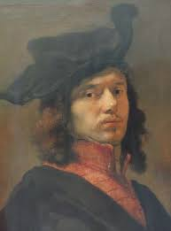

JOHANNES VERMEER
HAYATI
Johannes ya da Jan Vermeer (31 Ekim 1632, 15 Aralık 1675). Evlerin içindeki gündelik hayatı
betimlediği tablolarıyla tanınan Hollandalı Barok ressamdır.
Vermeer yaşamı boyunca başarılı, taşralı bir tür ressamı olarak tanındı. Ölümünün ardından eşi ve
çocuklarına borç bırakmasından (muhtemelen nispeten az tablo ürettiği içi) zengin olmadığı bellidir.
Vermeer, parlak renkler, peygamberçiçeği mavisinden sarıya kadar pahalı boya maddeleri kullandığı
resimleri üzerinde son derece dikkatli ve yavaş çalıştı. Tablolarındaki ışık kullanımı ve ustalıklı
işleyiş ile ünlendi. Çalışmalarında çoğunlukla açık bir sevgi teması özellikle de aşk hastalığı
dikkat çeker. Onun eserlerinde yarattığı dünya yaşadığına göre çok daha kusursuzdu.
Ölümünün ardında iki yüzyıl boyunca unutulan Vermeer, 1866 yılında sanat eleştirmeni Thoré Bürger
tarafından tekrar keşfedildi. Bürger, Vermeer’in 66 eseri hakkında bir makale yayınladı (bugün bu
eserlerden 35 tanesinin onun olduğu kabul edilmektedir) O günden itibaren Vermeer’in ünü büyüdü ve
Hollanda Altın Çağı’nın en önemli ressamlarından biri kabul edilmeye başlandı.
Vermeer’in yaşamı hakkında çok az bilgi vardır. Delft kentinde resim yaparak yaşamını kazandığı
düşünülmektedir. Ressamla ilgili kaynaklar bazı devlet kayıtları ve diğer ressamların yorumları
olduğu için Thoré Bürger onu “Delft’in Sfenksi” olarak andı. John Michael Montias, Vermeer hakkında
Vermeer and his milieu: a web of social history isimli bir biyografi yazdı. Bu biyografide de
ressamın yaşamından çok o dönemki sosyal hayat anlatılmıştır.
Vermeer’in bir ressamın yanında çırak olup olmadığı, eğer olduysa o ressamın kim olduğu belirsizdir.
Genellikle kendi kasabasında çalıştığına ve öğretmeninin ya Carel Fabritius ya da Leonaert Bramer
olduğuna inanılır. Kendi kendine resim yapmayı öğrenmiş olabileceği gibi, babasının bağlantıları
sayesinde bir eğitmen tarafından eğitilmiş de olabilir.
1657’de yerel bir sanat koleksiyoncusu olan Pieter van Ruijven ile tanıştığı ve bu şahsın Vermeer’i
desteklediği anlaşılmaktadır. 1662’de ise Vermeer Ressamlar Birliği kurulunun yöneticiliğine
seçildi. 1663, 1670 ve 1671’de bu makama tekrar seçilmesi itibarının arttığının bir kanıtıdır.
Vermeer pointillé olarak adlandırılan tekniği kullanıyordu ve resimlerini boyayı tuval üzerine
gevşek ve tanecikli katmanlar hâlinde yayarak çiziyordu. Resimlerinde kusursuz yerleşimi
yakalayabilmiş olmasına rağmen, tablolarında ön çalışmalara ait izler bulunmaz. Ayrıca, tablolar
haricinde hiçbir çizim, kesin olarak Vermeer’e mal edilmemiştir. David Hockney‘nin yanı sıra,
Hockney-Falco tezini savunan birçok sanat tarihçisine göre, ressam bu kesin yerleşimi elde edebilmek
için camera obscura kullanıyordu. Çıplak göz yerine bu tür bir lensin kullanılmasıyla ortaya çıkacak
ışık ve perspektif etkilerinin Vermeer’in tablolarında da görülmesi, bu görüşü desteklemektedir.
Ancak ressamın camera obscura’yı ne ölçüde kullandığı konusu, tarihçiler arasında tartışmalıdır.
On yedinci yüzyıl ressamları arasında Vermeer kadar müsrif bir şekilde lacivert taşı ya da doğal
lacivert gibi pahalı boya maddeleri kullanan yoktur. Vermeer, sadece bu maddeleri kullanarak
doğallığı yakalamamış ayrıca amber ve toprak gibi maddelerle iç mekandaki ışıklandırma ve duvara
birden çok renk yansıtma konusunda başarılı olmuştur. Vermeer’in bu çalışma metodunda Leonardo’dan
esinlendiği düşünülmektedir.
Ressamın, doğal laciverti en etkili kullandığı eserlerinden biri Şarap Bardaklı Kız’dır. Kırmızı
saten elbisenin gölgelerinde doğal lacivert görülebilir. Kırmızı ve lacivertin birleşmesi ile yer
yer oluşan morlarla eserdeki renk kullanımı çok güçlüdür.
Vermeer finansal olarak zora düştüğü 1672 senesinde bile pahalı boya maddeleri kullanmaya devam
etti. Bu sebeple Vermeer’in bu maddeleri bir koleksiyoncudan büyük ihtimalle de patronu Pieter
Claesz van Ruijven’den tedarik edildiğine inanılmaktadır.